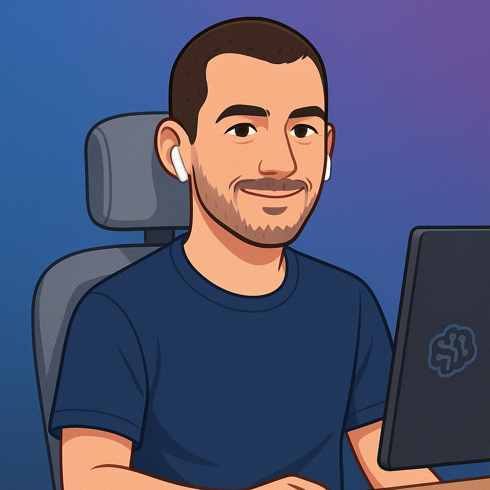
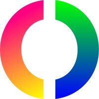
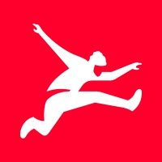

AI Systems Architecture
RAG pipelines, agent orchestration, evaluation and guardrails — designed to survive production traffic and cost.
I build AI systems that run in production.
LLMs, RAG, agents and AI-assisted software delivery — taken past the demo and into systems people depend on. Backed by 15+ years of software architecture and engineering leadership.

For the last three years my work has centred on applied AI: LLM-powered pipelines, retrieval-augmented generation, agent orchestration over MCP, fine-tuned open models running on local inference, and AI woven through the software development lifecycle itself.
What makes that work hold up is the fifteen years underneath it. Shipping AI is a systems problem — evaluation, guardrails, cost, latency, observability and a team that can maintain it — and that is exactly where architecture and engineering leadership earn their keep.
I also set the strategy for how AI is adopted across the organisation: where it creates real leverage, where it does not, and the quality practices that let people trust what it produces.
RAG pipelines, agent orchestration, evaluation and guardrails — designed to survive production traffic and cost.
AI-assisted review, code-quality automation and tooling that raises the bar for how software gets built.
Strategy, delivery and the guardrails that make AI adoption responsible rather than reckless.
Each of these solves a concrete engineering or operational problem — retrieval, classification, review, orchestration — rather than demonstrating a model.
A service that generates learning activities for an education platform — either authored by an LLM from a topic or source document, or extracted and converted from activities printed in a PDF.
A context-aware code review platform that goes beyond the diff to analyse code structure, dependencies, impact and risk.
An intelligent FAQ system that combines semantic search over a knowledge base with natural language generation.
A conversational assistant that turns a static CV into an interactive experience answerable in natural language.
Barcelona, Spain
Barcelona, Spain
Key technologies: Python, XGBoost, Hugging Face, Ollama, MCP, Gemma, Pandas, GitHub Actions, Docker, LLMs.
Key technologies: Go, PHP, Google Cloud (Cloud Run, Pub/Sub, Cloud SQL), Jenkins, Dixa API, MySQL, Docker, GitHub Actions, OpenTelemetry.
Barcelona, Spain
Key technologies: PHP, Go, AWS Lambda, DynamoDB, MySQL, RabbitMQ, Docker, Hexagonal Architecture, Microservices, Carfax API.
Barcelona, Spain
Key technologies: PHP, Symfony, MySQL, RabbitMQ, Docker.

Barcelona, Spain
Key technologies: PHP, Symfony, MySQL, Docker, Elasticsearch.

Barcelona, Spain
Key technologies: PHP, Symfony, MySQL, Docker, Elasticsearch, DDD, TDD.
UNIR · 2024 — 2025
Universitat Oberta de Catalunya · 2013
Universitat de Barcelona · 2007 — 2010
Open to conversations about applied AI, engineering leadership and what it takes to put AI systems into production.